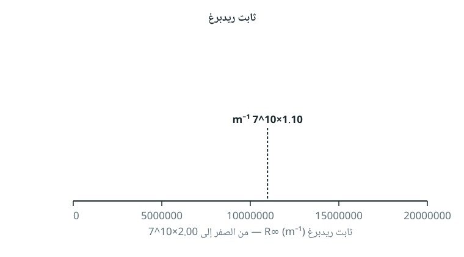

ثابت ريدبرغ
Rydberg constant
ثابت ريدبرغ R∞ هو أعلى ثابت في الفيزياء دقةً، ويحدد أطوال موجات خطوط طيف الهيدروجين: 1/λ = R∞(1/n₁² − 1/n₂²). قيمته من CODATA 2022 هي 10 973 731.568 157 m⁻¹ بعدم يقين نسبي 1.1×10⁻¹².
حين ينتقل إلكترون في ذرة الهيدروجين من مستوى طاقة أعلى n₂ إلى مستوى أدنى n₁ ينبعث فوتون طوله الموجي يتبع صيغة ريدبرغ. والثابت R∞ يخص نواة لا نهائية الكتلة؛ ولنواة محدودة الكتلة يُستعمل R = R∞/(1+m_e/M). مثال: خط Hα من n₂=3 إلى n₁=2: 1/λ = 1.097373×10⁷×(1/4 − 1/9) = 1.097373×10⁷×0.138889 = 1.5241×10⁶ m⁻¹، فيكون λ = 656.1 nm، وهو الخط الأحمر المعروف في طيف الهيدروجين.
كيف تعمل الظاهرة؟
الإلكترون في ذرة الهيدروجين محصور في مدارات كمومية بطاقات منفصلة E_n = −13.606/n² eV. وعند الانتقال بين مستويين ينبعث أو يُمتص فوتون طاقته فرق الطاقة، فيكون تردده ν = (E₂−E₁)/h. وبما أن λ = c/ν ينتج أن 1/λ يتناسب مع فرق مقلوب مربعي الأعداد الكمومية، ومعامل التناسب هو R∞. وثبات هذا الثابت عبر ذرات مختلفة هو ما أكد أن مستويات الطاقة لا تعتمد على نوع النواة إلا بحدود كتلتها.
العلاقة بالأرقام
1/λ = R∞(1/n₁² − 1/n₂²)، وR∞ = 10 973 731.568 157 m⁻¹. وطاقة المستوى E_n = −R∞·hc/n² = −13.6057/n² eV. مثال: طاقة تأين الهيدروجين من الحالة الأرضية = 13.6057 eV، أي 2.1799×10⁻¹⁸ J. وطول موجة حدّ سلسلة بالمر (n₂→∞، n₁=2) = 4/R∞ = 364.6 nm.
مفاهيم متقاربة
يُفرَّق بين R∞ وR_H: الأول لنواة لا نهائية الكتلة والثاني للبروتون، والفرق ناتج عن تصحيح الكتلة المخفضة. ويُفرَّق بين ثابت ريدبرغ وطاقة ريدبرغ: الأولى بوحدة m⁻¹ والثانية بوحدة J أو eV. ويُفرَّق بين صيغة ريدبرغ للهيدروجين وصيغة الذرات متعددة الإلكترونات، حيث لا تنطبق الأخيرة إلا تقريبياً بسبب التفاعل بين الإلكترونات. وأخيراً يُفرَّق بين ثابت ريدبرغ المقيس طيفياً والمحسوب من α وa₀، وتطابقهما اختبار دقيق للديناميكا الكهربائية الكمية.
حدود التطبيق
صيغة ريدبرغ دقيقة للهيدروجين والذرات الشبيهة به فقط، وتحتاج تصحيحات البنية الدقيقة والبنية فائقة الدقة والانتقال المشع. ولا تنطبق على الذرات متعددة الإلكترونات إلا بتقريب، لأن الإلكترونات تتفاعل فيما بينها وتكسر بساطة المستويات. ولا تنطبق في مجال مغناطيسي قوي حيث ينفصل المستويات (تأثير زيمان). وأخيراً لا تصف الثابت حالات الإلكترون في المواد الصلبة، حيث تختلف الكتلة الفعالة.

| الكمية | القيمة | المصدر |
|---|---|---|
| ثابت ريدبرغ R∞ | 10 973 731.568 157 m⁻¹ | [1] |
| R∞·hc بالكترون فولت | 13.605 693 122 990 eV | [2] |
| طول موجة خط Hα | 656.1 nm | [1] |
المصادر
- 1 CODATA Value: Rydberg constant — NIST — CODATA 2022 recommended values (2024). physics.nist.gov/cgi-bin/cuu/Value?ryd · اطُّلع عليه 2026-11-22
- 2 CODATA Value: Rydberg constant times hc in eV — NIST — CODATA 2022 recommended values (2024). physics.nist.gov/cgi-bin/cuu/Value?rydhcev · اطُّلع عليه 2026-11-22
- 3 CODATA Value: Bohr radius — NIST — CODATA 2022 recommended values (2024). physics.nist.gov/cgi-bin/cuu/Value?bohrrada0 · اطُّلع عليه 2026-11-22
استشهد بهذا المصطلح
الصيغتان مبنيتان من بيانات الصفحة نفسها: العنوان والتاريخ ورابط النسخة المنشورة.
ثابت ريدبرغ — Rydberg constant. (2026). ديوان المعرفة — انفراد. https://infiradev.com/diwan/terms/term-rydberg-constant.html
@misc{term-rydberg-constant2026,
title = {ثابت ريدبرغ},
titleaddon = {Rydberg constant},
howpublished = {{ديوان المعرفة — انفراد} — مرجع علمي عربي},
year = {2026},
url = {https://infiradev.com/diwan/terms/term-rydberg-constant.html},
urldate = {2026-11-26},
note = {مراجعة علمية: hermes (مراجعة معتمدة 2026-11-26)}
}
راجعه: hermes (مراجعة معتمدة 2026-11-26) · 2026-11-26 · آخر تحديث 2026-11-22